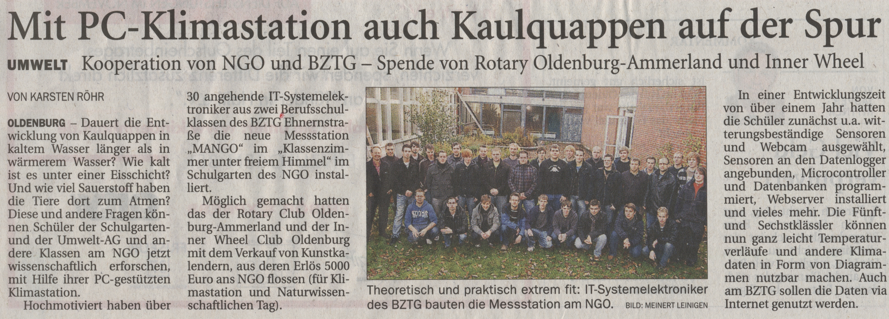

Home  M-A-NGO
M-A-NGO
M-A-NGOÜberarbeitung
Hallo, die Projektwebseite wurde vor kurzem auf ein neues System umgestellt. Dieser Beitrag muss noch aktuallisiert werden.
Schulprojekt: M-A-NGO
M-A-NGO steht für Messwerterfassung am Amphibienbiotop des NGO.
Projektbeschreibung
Das System ist Online erreichbar unter http://mango.mybztg.de/mams/
Projektdokumentation und Projektdaten
Content folgt...
Presse
Das Projekt wurde auf der Schulwebseite des NGO veröffentlicht.
Das ganze wurde dann auch in der lokalen Presse veröffentlicht.
Auch ein Bericht in der richtigen Zeitung aus Papier war da:
